Github
En este capítulo veremos como darnos de alta y hacer uso de esta plataforma.
Creando una cuenta nueva
Para registrarnos como usuarios necesitamos una cuenta de correo. Puede ser una buena idea crear previamente una nueva para no mezclar estas cosas con nuestro correo personal.
Seguidamente, en la página inicial de GitHub veremos dos enlaces:
- Sign In, para acceder si ya tenemos un código de usuario y contraseña
- Sign Up, para crear una nueva cuenta de usuario.
Pulsamos en el enlace [Sign_up], o bien introducimos directamente nuestras credenciales en el formulario que se facilita en la página principal, nuevo nombre de usuario, e-mail y la contraseña que queremos establecer.

A continuación veremos un asistente que nos pedirá que indiquemos el tipo de cuenta: gratis o de pago. Estas últimas permiten un mayor espacio de almacenamiento, y la posibilidad de que los repositorios sean privados.
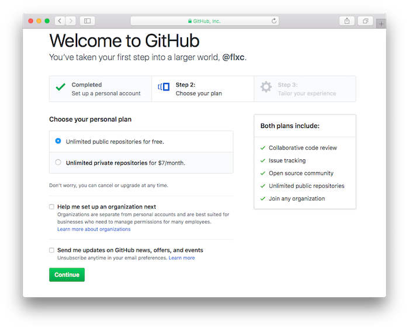
Atención:
La privacidad de los repositorios se refiere a los archivos que subamos a GitHb. Pero si hacemos uso de GitHub Pages para convertir nuestros documentos y mostrarlos como páginas web, estas serán públicas. GitHub Pages no cuenta con la posibilidad de crear sitios web privados, accesibles solo para personas autorizadas.
El siguiente paso del proceso de alta es cumplimentar una encuesta. Pulsamos en el botón [Submit], al final del formulario.
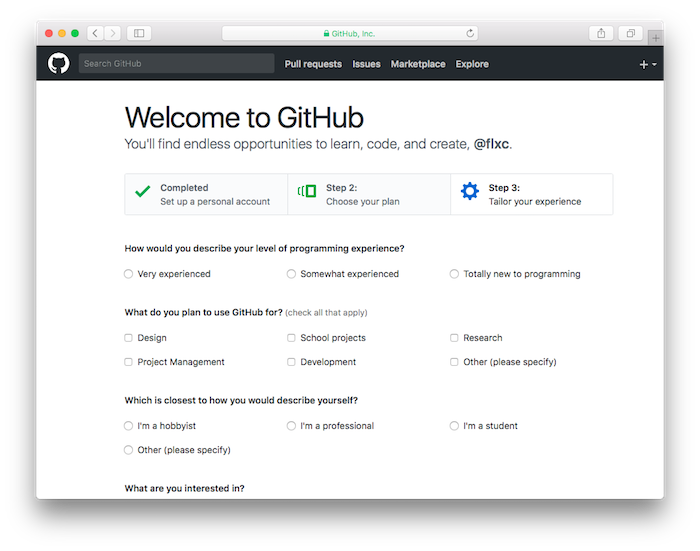
A continuación tenemos la página principal de nuestra cuenta de usuario, con una lista de proyectos que por ahora está vacía:
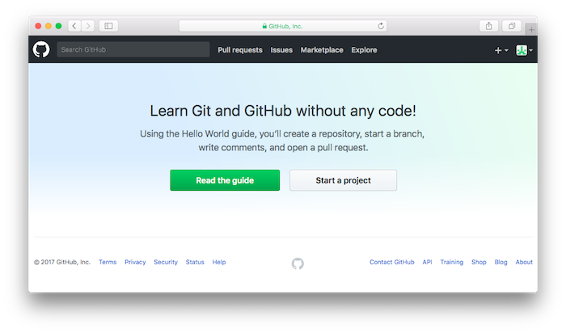
Antes de seguir adelante, debemos abrir nuestro gestor de correo y buscar el mensaje que nos ha enviado GitHub, donde se nos facilita un enlace en el que debemos pulsar para confirmar que se trata de una dirección de correo real.
La página principal
Cada vez que nos identifiquemos con nuestro código de usuario tendremos una sesión abierta que se mantendrá en ese estado aunque cerremos la ventana del navegador. Siempre que visualicemos cualquier página de GitHub, en la esquina superior izquierda tenemos el logo de este servicio: un “octogato“

Pulsando sobre ese icono volvemos a la página principal de GitHub, donde si tenemos una sesión abierta se mostrará nuestra lista de proyectos. En la esquina superior de la derecha vemos unos iconos muy útiles. Pulsando en el símbolo [+] podemos crear nuevos proyectos.
En esa esquina veremos también un icono con nuestra foto de perfil (que por ahora es un símbolo abstracto). Pulsando aquí obtenemos una lista desplegable con varias opciones: visualizar el manual de ayuda de GitHub, acceder a nuestra configuración de usuario, o cerrar la sesión [Sign_out]. Es importante dejar la sesión correctamente cerrada, para evitar accidentes indeseados.
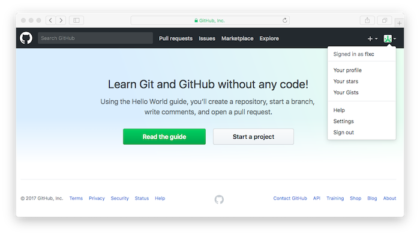
Configurar la cuenta
Para revisar nuestro perfil de usuario tenemos que pulsar en la esquina superior derecha y en el menú desplegable seleccionar “Your Profile”.
Creando un proyecto
Cada usuario puede alojar varios proyectos en su cuenta, cada uno en un repositorio diferente. Para crear un proyecto nuevo podemos pulsar en el botón [Start a Project] de la página principal, o bien en el icono [+] de la esquina superior derecha. Aparece la página de creación de nuevo repositorio:
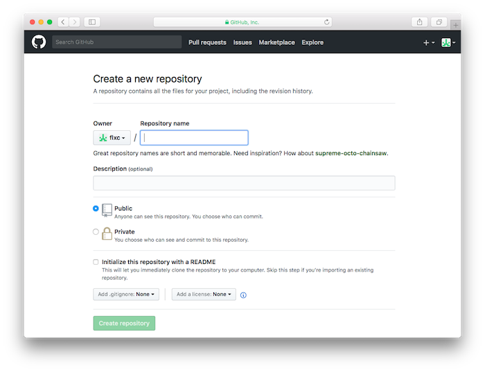
Introducimos el nombre de repositorio (que es lo mismo que el nombre del proyecto), una descripción, y seleccionamos si se trata de un repositorio público o privado. Los privados no pueden ser visualizados por usuarios no autorizados, pero requieren una cuenta de pago. Los públicos son visibles para todo el mundo, incluso para quienes no sean usuarios de GitHub. Además se permite que otros usuarios copien los contenidos para su propio uso. A fin de cuentas, GitHub es un servicio para compartir software.
Se nos dará la opción de empezar con un repositorio vacío, o iniciarlo con tres archivos de texto opcionales. Se recomienda incluir el primero de ellos como mínimo:
-
Archivo README, que contiene una presentación del proyecto y se utiliza a efectos de documentación.
-
Licencia de uso. Teniendo en cuenta que la filosofía de GitHub es compartir documentos, posiblemente querremos especificar unas condiciones de uso para evitar que alguien se apropie de nuestro trabajo y se asigne derechos de copyright. Podemos elegir entre varios tipos de licencias:
- licencia apache 2.0
- licencia GNU, en varios formatos
- licencia MIT
- licencia BSD
- licencia Eclipse
- licencia Mozilla 2.0
Dependiendo de nuestra elección, el texto que se mostrará otorgará unos permisos y limitaciones diferentes. Pulsar aquí para ver diferentes tipos de licencias y hacernos una idea.
-
Archivo “.gitignore”. Si editamos los documentos en nuestro ordenador local, tendremos que subirlos posteriormente al repositorio GitHub, con lo que tendremos los archivos por duplicado. El problema es coordinar que cuando se modifica un documento en cualquiera de los dos entornos, ambos estén sincronizados.
Esta sincronización se lleva a cabo con la ayuda de un software llamado git, que actualiza el entorno más desfasado (el local o el remoto), sustituyendo la versión más antigua del fichero por la más nueva.
El archivo
.gitignorecontiene la lista de archivos y carpetas que no serán tenidos en cuenta en esa sincronización.
Nota:
En los sistemas operativos tipo UNIX (Linux, MacOS, etc) la forma de hacer que un fichero sea oculto es ponerle un punto “.” como prefijo del nombre.
Finalmente pulsamos en el botón [Create Repository].
Editando archivos
Tras crear el repositorio, aparece la ventana principal del mismo:
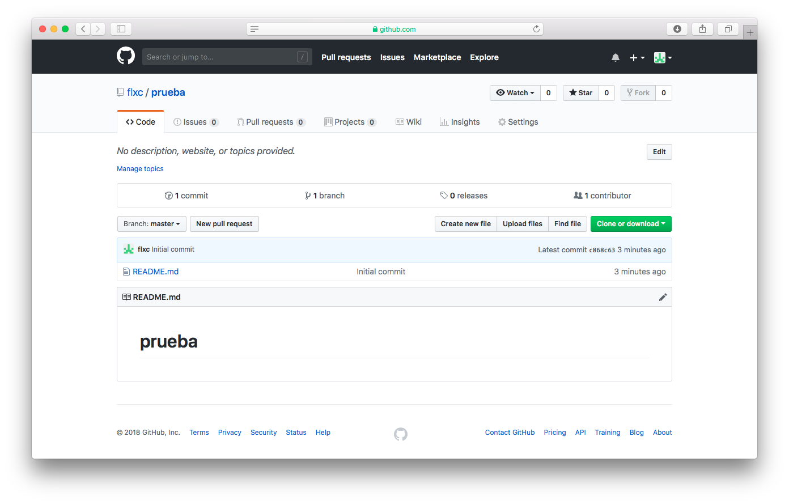
Hacia la mitad de la ventana tenemos la lista de archivos. Por ahora solo tenemos un fichero llamado README.md con el propósito de documentar el proyecto. Debajo de la lista se muestra el contenido de README.md.
Pulsando con el ratón sobre cualquier documento, se visualiza el contenido del mismo:
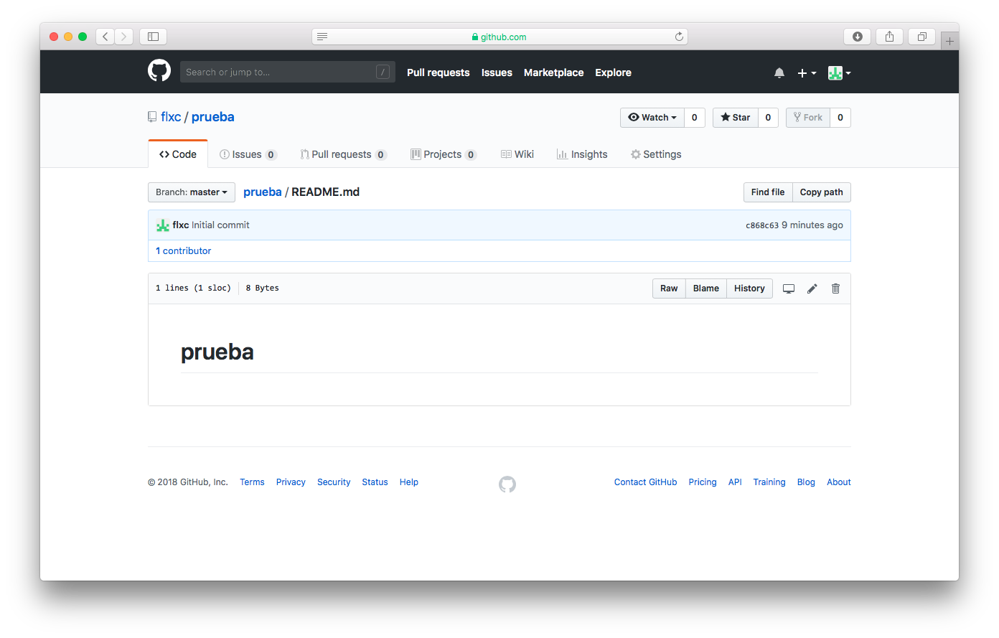
GitHub intentará presentar ese contenido de acuerdo a su extensión. Un archivo .jpg, por ejemplo, se mostrará como imagen, y un archivo .md o .markdown, como texto. Este formato es el más popular de GitHub para crear archivos de texto que requieran de una presentación un poco elaborada (cabeceras, tipos de letra, imágenes, enlaces, etc).
Al visualizar un archivo, encima del mismo, y hacia la derecha, se muestran algunos iconos de utilidad:
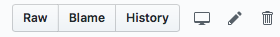
- Pulsar sobre el icono del lapicero para editar el documento e introducir modificaciones.
- Pulsar sobre el icono de la papelera para eliminarlo.
- El botón
rawmuestra el fichero en formato de “texto plano”, no llevando a cabo adaptaciones para mostrar su aspecto final. - El botón
blamemuestra cada línea de texto indicando quien la modificó y en que fecha. Resulta útil en proyectos de equipo. - El botón
historymuestra el log de cambios del fichero.
Advertencia:
¡Cuidado con el icono del lapicero cuando estamos visualizando repositorios de otros usuarios!. En principio no debería permitirnos editar un archivo que no es nuestro, pero si hemos entrado a “GitHub” con nuestra cuenta de usuario y contraseña, lo que sucede es que se crea automáticamente una copia (“fork”) en nuestra cuenta, y nos permite editar la nueva versión derivada de la original. Al propietario le aparecerá un mensaje indicando que alguien ha iniciado un nuevo proyecto basado en el suyo.
Si modificamos cualquier documento debemos finalizar la edición pulsando en la parte inferior de la página sobre el botón [commit_changes] para guardar los cambios realizados.
Añadiendo archivos a un repositorio
Para subir archivos desde nuestro ordenador personal, accedemos a la página principal del proyecto y pulsamos en el botón [upload_files]:
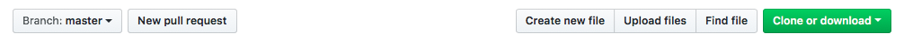
Se muestra la siguiente página:
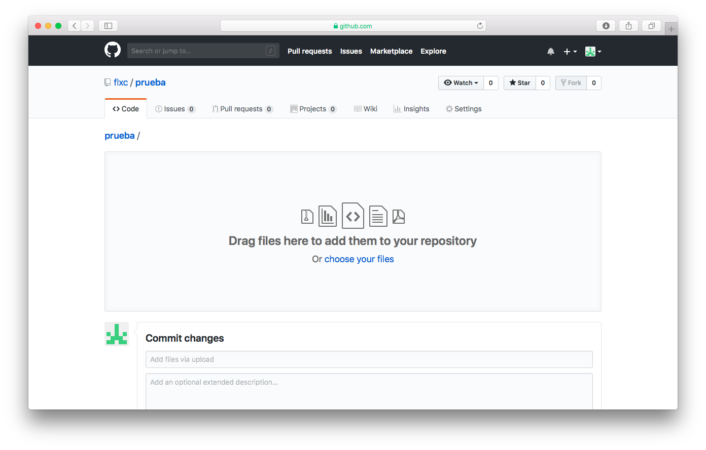
Pulsamos sobre el enlace [choose your files] o bien arrastramos directamente los archivos sobre el panel: ficheros de texto, imágenes, pdfs, etc. Finalmente bajamos hasta el pie de página y pulsamos en el botón [Commit Changes] para que se lleve a cabo la operación.
Advertencia:
Cada operación de subida de archivos tiene un límite en cuanto a número de ficheros y tamaño. Es posible que tengamos que hacer la operación en varias etapas, limitando el número de archivos en cada una de ellas. En cuanto a las imágenes demasiado grandes, es recomendable utilizar previamente alguna herramienta de conversión que permita reducir el tamaño de la imagen.
Otra posibilidad es crear directamente un archivo de texto desde cero. En la página principal del repositorio, pulsar sobre el botón [Create new file]. Aparecerá un panel de edición para introducir el texto:
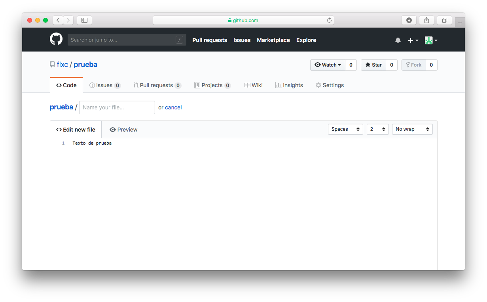
En la parte superior tenemos un recuadro para asignar un nombre al archivo. Añadiendo un carácter / convertiremos lo que hay a su izquierda en nombre de subcarpeta. Usando la tecla de borrado hacia atrás, podemos borrar el nombre de la carpeta y cambiarlo por otra, que si no existe, se creará.
Pulsando en el botón inferior [Commit Changes] se guardarán los cambios. El botón está desactivado hasta que no asignemos un nombre al documento.
Cambiando el nombre de un archivo
Para modificar el nombre de un archivo, moverlo a otra carpeta, o ponerlo en una nueva, seleccionar dicho archivo, pulsar en el icono del lapicero, y en la página de edición, modificar el nombre. Para cambiarlo de carpeta, usar la tecla de borrado hacia atrás para modificar el nombre de la misma.
Haciendo una copia del repositorio
Una vez que hemos creado los primeros documentos, podemos descargar una copia a nuestro ordenador personal pulsando en el botón [download] en la lista de archivos.
Seleccionamos la opción Download zip, que baja un archivo .zip con todo los contenidos del repositorio.
También podemos usar GitHub Desktop, un software para sincronizar proyectos de GitHub con los contenidos de nuestra máquina local. Veremos su funcionamiento en otro capítulo de este cuaderno.
Crear una rama (branch)
Dentro de un proyecto podemos crear varias “ramas” de desarrollo, es decir, versiones en paralelo. Podemos tener, por ejemplo, una versión estable del proyecto y una de trabajo donde vamos introduciendo las modificaciones sin afectar a la versión principal.
Por defecto cada repositorio se crea con una rama llamada master. Cuando creamos una nueva rama, lo que hacemos es clonar la existente para seguir trabajando en la copia e introducir cambios.
Para crear una rama a partir de la actual, debemos situarnos en el repositorio en cuestión y en la cabecera de la lista de archivos pulsamos sobre el botón [branch]. Se despliega un menú para seleccionar alguna de las ramas que tengamos vigentes.
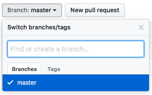
El menú cuenta con un recuadro de edición que permite introducir un nuevo nombre. A medida que lo escribimos se crea una nueva entrada en la lista desplegable. La seleccionamos.
Tras crear la nueva rama, todos los archivos de la anterior se copian automáticamente. Podemos usar el botón [branch] para pasar de una rama a otra.
Pull request
Tras introducir modificaciones en la rama “de pruebas” lanzaremos una “pull request”, es decir, una petición para que la rama padre incorpore (pull) los commits de nuestra rama actual. Para ver esto con más detalle, GitHub proporciona un tutorial sobre como crear repositorios, ramas y pull requests.
La operación “pull request” mostrará las diferencias entre ambas ramas: cambios, adiciones y eliminaciones, que se ven en diferentes colores.
El primer paso es seleccionar la rama que contiene la versión más actualizada, con los cambios introducidos. En la cabecera de la lista de archivos, junto al selector de ramas, tenemos el botón [new pull request]. Esto nos muestra la lista de cambios realizados. Tras comprobarlo, pulsamos sobre el botón [create pull request].
A continuación se mostrará nuestra lista de peticiones pendientes y una comprobación de conflictos. Si todo está OK, podemos pulsar sobre el botón [merge pull request] para actualizar la rama master.
Si todo va bien, visualizaremos el mensaje Pull request successfully merged and closed. Se nos da la opción de suprimir la rama de trabajo, ya que ahora está duplicada con la master.
La lista de pulls request se visualiza pulsando en la barra superior de la página del proyecto, en el enlace [pull resquests].
Para volver a la lista de archivos, pulsar sobre el icono [code].
Los botones Watch, Star, y Fork
Estos tres botones se muestran en la esquina superior derecha de cada repositorio de GitHub. Podemos tener seguidores de un proyecto, que recibirán un e-mail cada vez que hagamos cambios. Pulsando en el enlace [watch] de un repositorio ajeno, si somos un usuario registrado podemos convertirnos en seguidores del proyecto. A la derecha se muestra el número de seguidores, y pulsando sobre el mismo, la lista.
Para hacer uso de las notificaciones tenemos que configurar nuestra cuenta. En el panel principal de usuario pulsar sobre [Edit profile] y seguidamente en [Notifications].
El botón [Star] es una forma de marcar los repositorios que nos gustan.
El botón [Fork] permite que copiemos el proyecto a nuestro espacio de trabajo creando nuestra propia versión.
Eliminar un repositorio
Si hemos creado un repositorio que queremos eliminar, entrar en la página principal del mismo, donde se muestra la lista de archivos, pulsar en el enlace [settings] y hacer uso de la opción que aparece al final, [delete this repository]. Por supuesto, perderemos todos los contenidos si no los hemos respaldado previamente.
Convertir un repositorio GitHub en privado
Si tenemos una cuenta de pago, seleccionar el repositorio, pulsar sobre el icono [settings], y hacer uso de la opción que aparece al final de la configuración del repositorio, Make this repository private.
Los repositorios privados solo están disponibles para cuentas de pago.
Configurar o eliminar una cuenta de usuario de GitHub
Para modificar la configuración de nuestra cuenta debemos iniciar una sesión de GitHub con nuestro nombre de usuario y password. Si no estamos en la página principal de nuestra cuenta, en la esquina superior derecha de cualquier página pulsar sobre el menú desplegable, y seguidamente en la opción [your profile].
Pulsar sobre el botón [Edit Profile] y seguidamente en la opción [Account]. Las opciones son:
- cambiar la password
- cambiar el nombre de usuario
- eliminar la cuenta de usuario
¡Cuidado con las dos últimas opciones!. El nombre de usario puede estar ligado a otros recursos y cambiarlo puede darnos bastantes quebraderos de cabeza. Y obviamente, eliminar la cuenta de usuario supone la pérdida de todos los contenidos si no los tenemos respaldados en nuestro ordenador o en otro recurso de red.
La documentación de GitHub
Pulsando en el icono de nuestro perfil, en la esquina superior derecha, veremos que la opción Help nos da acceso al manual de GitHub.
También contamos con una excelente colección de tutoriales. Véase por ejemplo: